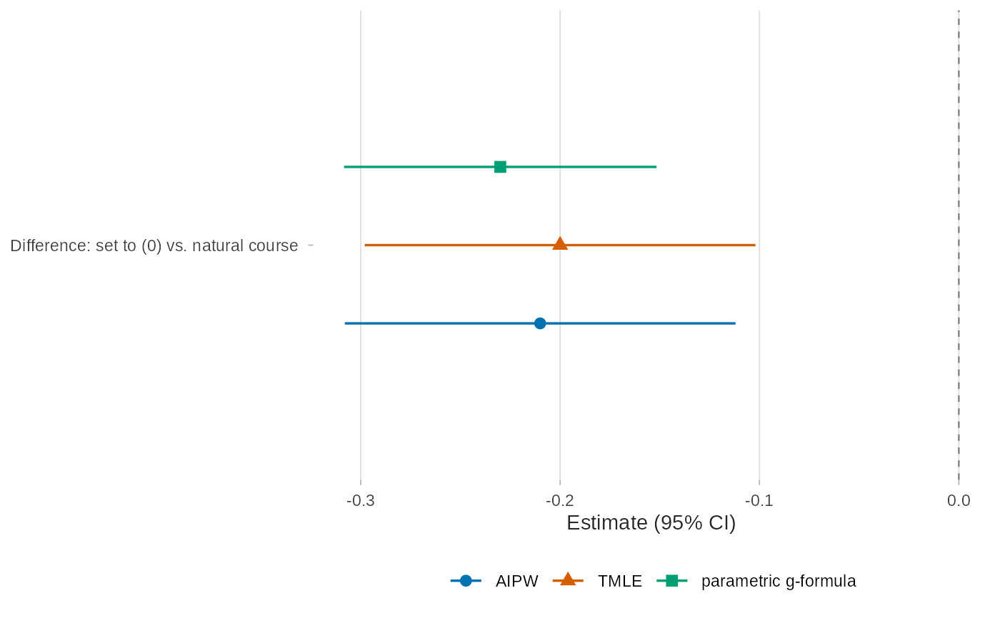
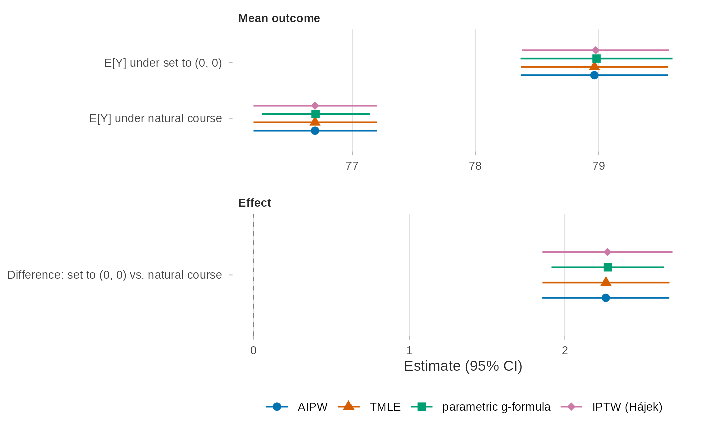

Plot several causal-effect results side by side
causal_plot.RdA forest plot comparing several intervene_membership() results (the class effects
\(\Delta_k\), one colour per result: e.g. estimators, propensity models or
confounder sets) or several intervene_effect() results (e.g. AIPW, TMLE, IPTW and
the g-formula for the same intervention, or different interventions).
Usage
causal_plot(
x,
...,
labels = NULL,
what = c("effect", "all"),
level = 0.95,
class_labels = NULL
)Arguments
- x
A result, or a list of results (may be omitted when all results are given as named arguments in
...).- ...
Further results.
- labels
Optional labels, one per result. Default: the list or argument names, else the estimators when they differ, else
(1),(2), ...- what
intervene_effect()results:"effect"(the effect \(\psi\) only, default) or"all"(also the mean outcomes under the two interventions, in a second panel).- level
Confidence level of the intervals.
- class_labels
intervene_membership()results: optional class labels, one per class.
Examples
# results in the layout intervene_effect() returns (plain values, no Julia needed)
ie <- function(est, psi, se) {
structure(list(estimator = est, psi1 = 1.2, psi0 = 1.2 + psi, effect = -psi, se = se,
se_psi1 = se, se_psi0 = se / 2, n = 1500L, g1_label = "set to (0)",
g0_label = "natural course"), class = "intervention_result")
}
causal_plot(ie("aipw", 0.21, 0.05), ie("tmle", 0.2, 0.05), ie("gformula", 0.23, 0.04))

data(ace_study)
# \donttest{
# do the four estimators agree on the effect of preventing abuse and neglect?
fits <- lapply(c("aipw", "tmle", "gformula", "ipw"), function(e)
intervene_effect(ace_study, outcome = health, exposures = ace1:ace8,
intervene = c(ace1, ace2), confounders = c(age, female, parent_edu),
g1 = setto(c(0, 0)), estimator = e, B = 50))
#> Starting Julia ...
causal_plot(fits, what = "all") # all close to the true +2.00

# }